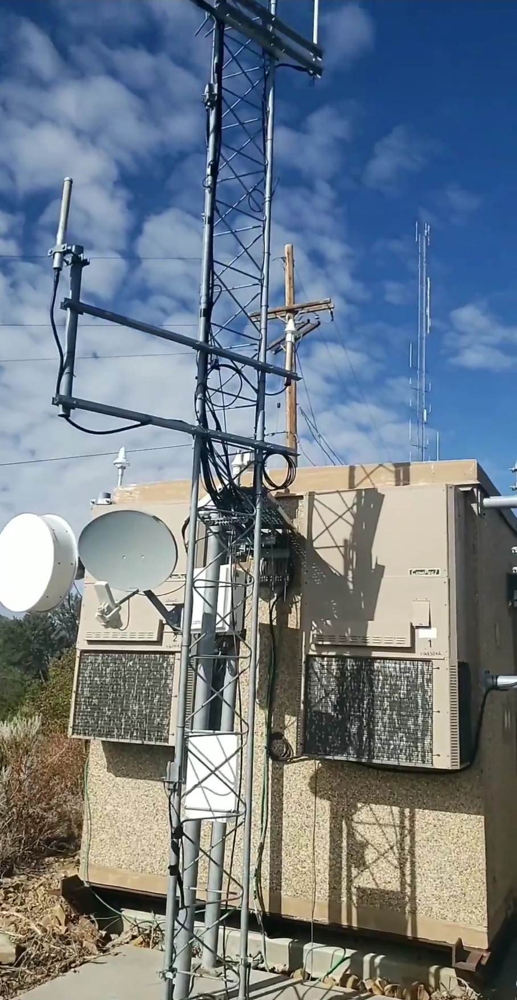

Devices that receive and amplify signals to extend the range of a network.
Repeaters are networking devices used to regenerate and amplify signals in a network. They help extend the reach of a network by boosting weak signals, allowing data to travel longer distances without degradation. Repeaters are commonly used in wired and wireless networks to improve signal quality and coverage.
This repeater is located near the Kennecott Utah Copper Mine in the Salt Lake Valley
This repeater helps maintain strong network connectivity in the area for radio communications being used by personnel working in and around the copper mine!
To learn more about Kennecott Utah Copper please visit Rio Tinto Kennecott's official website.